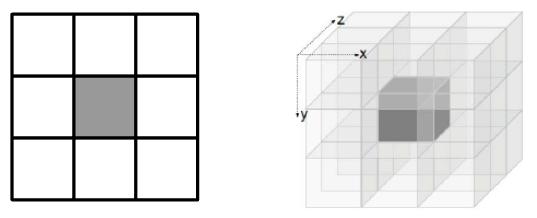
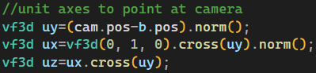
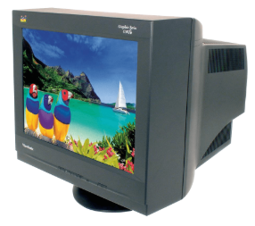
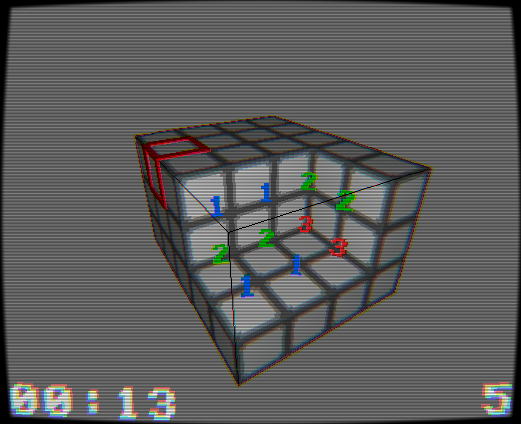
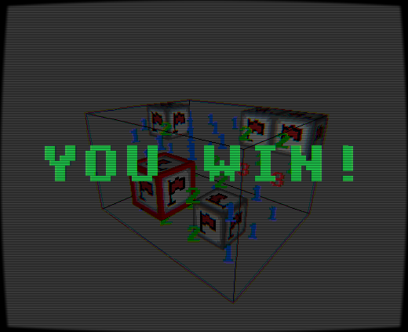
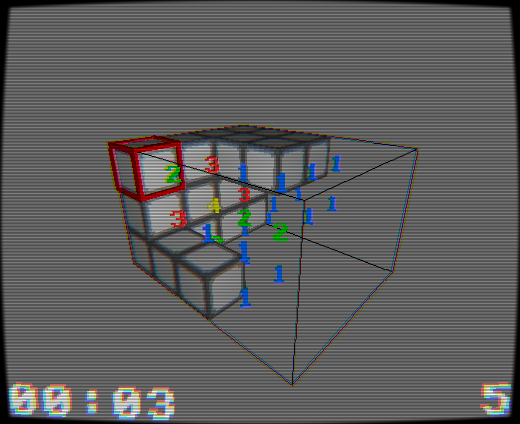
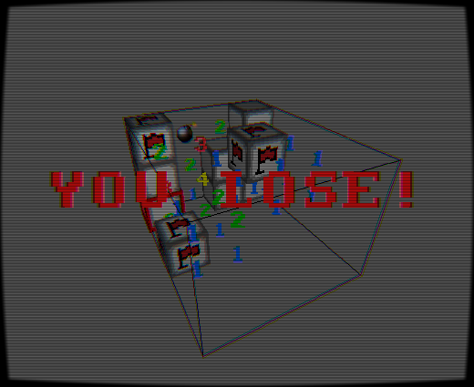
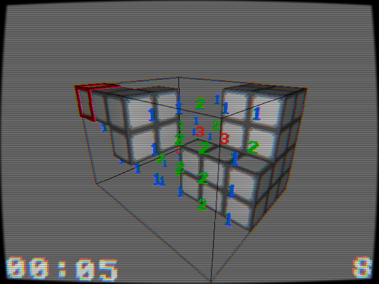
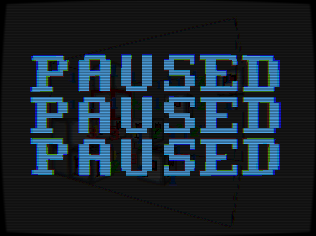

Usage
• Use the left cursor/ARROWS to orbit around.
• Hover the left cursor select cells.
• Press Space to sweep a cell.
• Press F to flag a cell.
• Press P to play/pause the game.
• Press R to reset the game.
Overview
This is a three dimensional version of the classic puzzle game Minesweeper.
In 2d, each cell has 8 neighbors, but in 3d, there are 26.
I've found that grid sizes ranging from 4x4x4 to 7x5x8 have a good difficulty spread.
Then, a challenging while not frustrating bomb/cell ratio is 1:18.
I intend to add a menu with selectable difficulty modes in the future.

Just like in classic minesweeper, there is a timer and bomb count display.
This remaining bomb count display shows the number of starting bombs minus the number of flagged cells.
As an homage to the somewhat aggravating original, there is no safeguard against sweeping a bomb.
This makes it fun!
The voxel grid of cells is rendered by showing the faces between what is swept and what isn't.
The texture used per cell is either a tile or a flag.
The cursor is rendered as the thickened edges of a cube.
The numbers(hints) and cosmetic particles are rendered with billboards.
A billboard is a quad that uses a model matrix with a coordinate system pointed towards the camera.
This way the numbers always point toward the screen:

The game utilizes a simple cosmetic particle system to add effects when cells are swept, and when a bomb explodes.
White particles are used for debris, and particles with a gradient ranging from orange to black are used for the explosion.
The paused, won, and lost overlays purposefully use varying amounts of transparency to prevent/allow the user from seeing the game.
To make it seem more retro, and because I enjoy the effect, everything is first rendered into a texture.
Then a second pass applies a CRT effect utilizing barrel distortion, chromatic aberration, scanlines, and vignette.

Gallery





